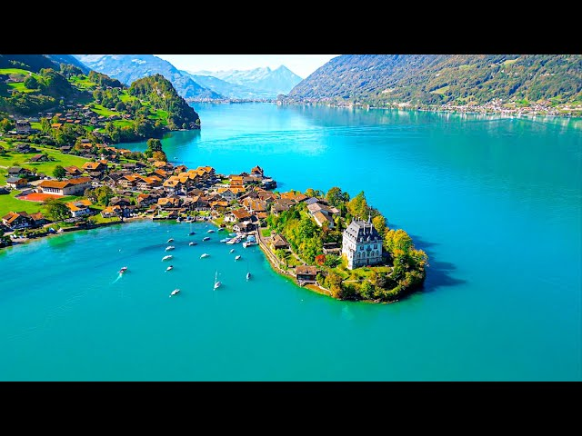
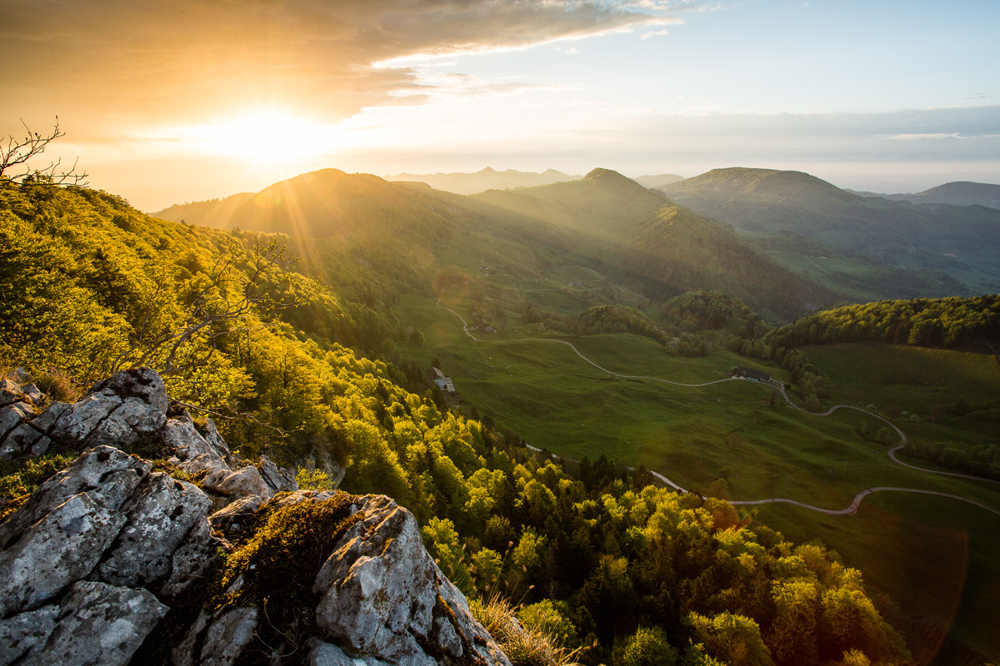
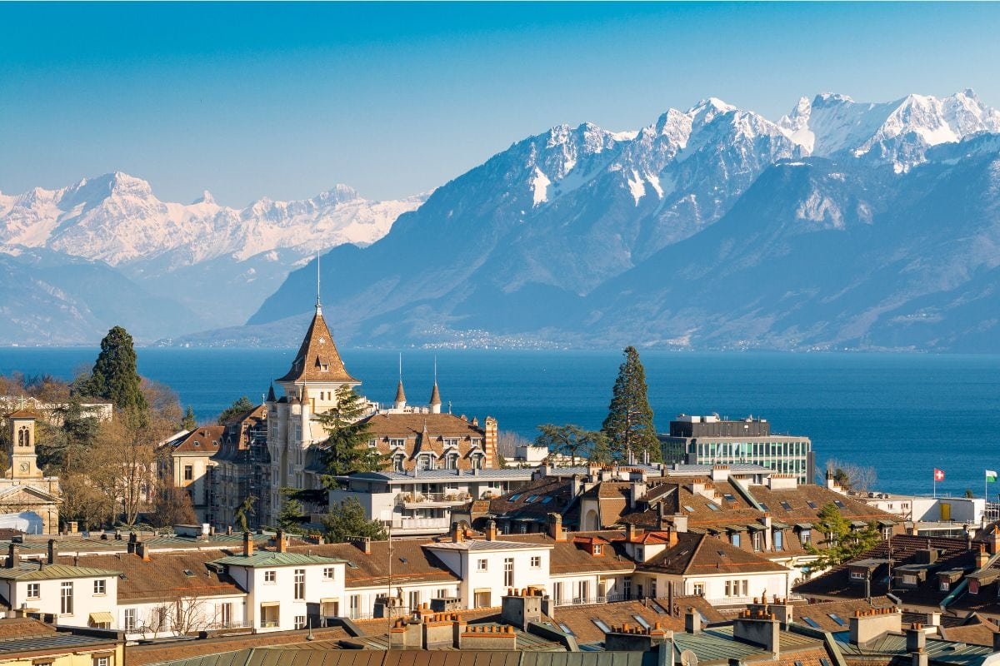
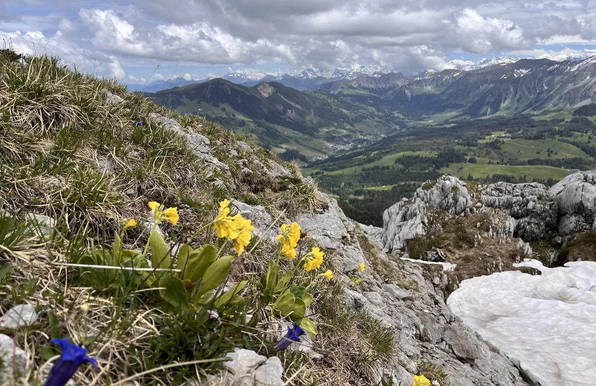

Switzerland felt like stepping into a living postcard. Crystal lakes, tidy villages, and the Alps towering in every direction. I hopped sleek tains from Zürich to Lucerne and to car-free mountain towns, where cowbells and glacier views set the soundtrack. Between fondue that actually tastes better after a hike and chocolate that ruins you for all others, the country nails cozy and breathtaking at the same time. What surprised me most was the blend of cultures—German, French, and Italian influences woven into everyday life, all flawlessly punctual.
My top five favorit spots from this trip were the Swiss Alps, Istelwald, the Regionaler Naturpark Thal,
Lausanne, and Schrattenfluh.
| Location | Rating | Images |
|---|---|---|
| Swiss Alps | 10 | |
| Istelwald | 9.5 |  |
| Regionaler Naturpark Thal | 9.3 |  |
| Lausanne | 9 |  |
| Schrattenfluh | 8.8 |  |
Switzerland can be hard to navigate if it is your first time there, and even moreso if it is your first time travelling in general. So to help, I have come up with a small list of tips for any visitors.
I visited Switzerland and it was absolutely stunning. The trains were spotless and on time, the lakes were crystal clear, and every mountain view felt unreal. I loved grabbing fresh bread and chocolate, then riding a gondola for an easy hike with big alpine views. Friendly, safe, and super easy to get around—highly recommend.